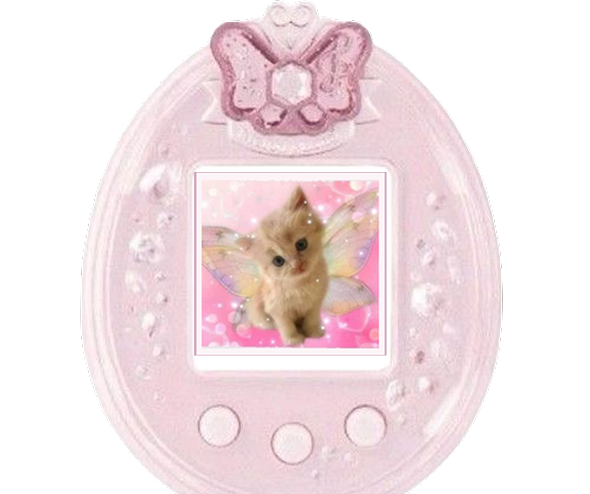
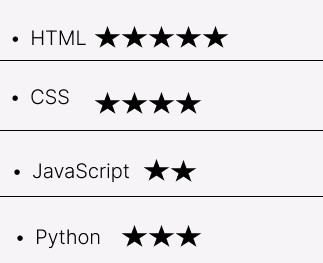
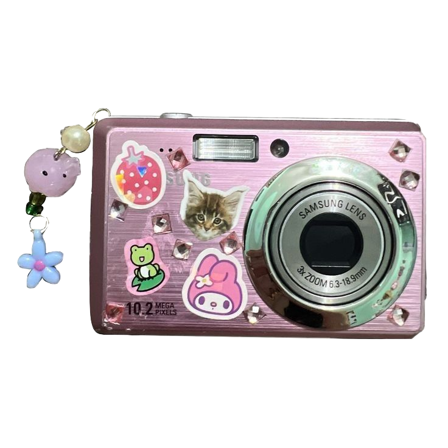

About Me
Hi! I’m Ginna ♡ I’m an aspiring front-end web developer who loves combining creativity with code. I enjoy creating colorful, interactive, and user-friendly websites using HTML, CSS, and JavaScript. I’m always learning new techniques and challenging myself with projects that help me grow as a developer. My favorite part of web development is taking an idea and watching it come to life on the screen.

Fun Facts About Me
- Even though I am 24 years old I still like watching the winks.
- I am ISFJ (Introverted, Sensing, Feeling, and Judging).
- I have a cat named Killua.
- I am fluent in Spanish, English and I am now learning Mandarin
Language Skills

Click Me To Take A Picture
